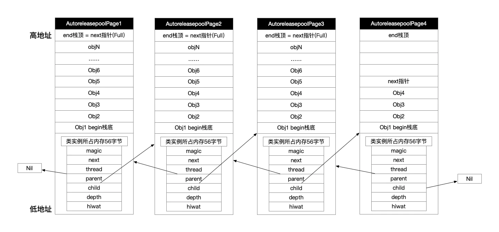

前言
Hi Coder，我是 CoderStar！
在 MRC 时代，我们可能会经常用到AutoreleasePool来帮助我们管理内存，在 ARC 时代，一些内存管理的操作被编译器替代了，不用再去手动的release以及autorelease等操作了，但是AutoreleasePool仍然在背后默默发挥着作用，并且有些场景下我们还是需要显式用到它，今天我们就来聊一聊AutoreleasePool。
下列源码为
Runtime objc内代码，版本之间可能会有差异，但是大致原理应该是一致的。
使用形式
1 | // OC |
基本原理
@autoreleasepool 包裹的相关代码在编译时，编译器会自动把它编译为如下形式。
1 | // 这个poolSentinelObj其实就是哨兵对象 |
其实如果研究的更细一点，其中还会有一个
__AtAutoreleasePool的结构存在，其仅仅是对上述两个方法更高一层的封装而已；
继而查看objc_autoreleasePoolPush以及objc_autoreleasepoolPop这两个函数的源码实现，如下：
1 | void *objc_autoreleasePoolPush(void) { |
上面我们可以看到一个核心类，AutoreleasePoolPage。
AutoreleasePoolPage结构
AutoreleasePoolPage 是一个 C++ 中的类，在 NSObject.mm 中的定义是这样的：
1 | class AutoreleasePoolPage { |
注意查看注释
从上述的结构可以知道，其实每一个AutoreleasePool都是以AutoreleasePoolPage为节点用双向链表的形式连接起来的。
每个 AutoreleasePoolPage 对象有 4096 字节的存储空间, 除了存放它自己的成员变量（56 个字节，每个占 8 个字节）外, 剩下的空间用来存储后面加入的 autorelease 对象。
为什么每个 AutoreleasePoolPage 的大小设置成 4096 个字节呢？ 内存管理、映射中的基本单位是页，一页的大小是 4kb（早期设备）或者 16kb（A7 芯片及以后）。

大致流程
- 当进入
@autoreleasepool作用域时，objc_autoreleasePoolPush方法被调用,runtime会向当前的AutoreleasePoolPage中添加一个 nil 对象作为哨兵对象，并返回该哨兵对象的地址； - 对象调用
autorelease方法，会被加入到对应的的AutoreleasePoolPage中去，next指针类似一个游标，不断变化，记录位置。如果加入的对象超出一页的大小，便会自动加一个新页。 - 当离开
@autoreleasepool作用域时，objc_autoreleasePoolPop(哨兵对象地址)方法被调用，其会从当前 page 的 next 指标的上一个元素开始查找, 直到最近一个哨兵对象, 依次向这个范围中的对象发送release消息；
因为哨兵对象的存在，自动释放池的嵌套也是满足的，不管是嵌套还是被嵌套的自动释放池，找自己对应的哨兵对象就行了。
下面看下具体源码流程分析。
源码流程分析
push 函数
1 | // 哨兵对象定义 |
pop 函数
1 | // 查看源码发现pop函数最终会调用 releaseUntil |
在 autoreleasepool 中，看看这个释放的顺序：
pop 哨兵对象时先通过找到当前页，然后再通过 child 指针找到所有子页进行释放。我们需要使用 child 指针；
由于需要保证释放时是先进后出，所以我们是从最末尾一个 page 开始，那么会需要取到前一个 page，所以用到 parent；
这个也是双向链表而不是单向链表的原因。
autorelease 函数
1 | static inline id autorelease(id obj) |
执行类型
AutoreleasePool一般会包括两种执行类型：
- 主
RunLoop自动加入的AutoreleasePool； - 手动添加
AutoreleasePool；
主 Runloop 自动加入
主线程 Runloop 中注册了两个 Observer，回调都是 _wrapRunLoopWithAutoreleasePoolHandler()。两个 Observer 如下：
- 监测
Entry事件，回调里自动创建自动释放池，order为-214748364， 优先级最高，保证创建释放池发生在其他所有回调之前； - 监测
BeforeWaiting及Exit事件；BeforeWaiting时调用_objc_autoreleasePoolPop()和_objc_autoreleasePoolPush()释放旧的池并创建新池。Exit时调用_objc_autoreleasePoolPop()来释放自动释放池。这个 Observer 的order是2147483647，优先级最低，保证其释放池子发生在其他所有回调之后。
系统的自动释放池也并不总是在
BeforeWaiting和Exit才释放，在处理完Timer和Source事件之后, 也可能会进行释放操作。
当然系统部分方法内部也自动添加了AutoreleasePool，比如：
使用容器的
block版本的枚举器时，内部会自动添加一个AutoreleasePool；1
2
3[array enumerateObjectsUsingBlock:^(id obj, NSUInteger idx, BOOL *stop) {
// 这里被一个局部 @autoreleasepool 包围着
}];使用
NSThread的detachNewThreadSelector:toTarget:withObject:方法创建新线程时，新线程自动带有AutoreleasePool；- …
手动添加
如果手动加了autoreleasepool，则在作用域大括号结束时释放；
那我们一般会在什么场景下手动添加呢？
CLI 程序
因为 GUI 程序拥有 RunLoop 机制的原因，每个周期都会进行释放，我们可能不用太过关注AutoreleasePool的使用，但是 CLI 程序可能我们就需要对其更关注一些了。
遍历中生成大量Autorelease局部变量
在遍历过程中生成大量Autorelease局部变量，会导致内存峰值比较高，我们手动加入AutoreleasePool可以降低内存使用峰值；
1 | func loadBigData() { |
这个地方稍微扩展一下，不是所有方式生成的对象都可以用这种方式去降低内存峰值，因为我们可以明确的是只有Autorelease类型的对象才会交给AutoreleasePool去管理，如果不是这类对象，则没有效果；
那什么样的对象才是Autorelease类型的呢？
- 编译器会检查方法名是否以
alloc,new,copy,mutableCopy开始，如果不是则自动将返回值的对象注册到AutoreleasePool中，比如一些类方法；这个地方会有个点，如果你自定义的方法是用这几个关键单词开头的，clang 在编译的时候就就不会走
release逻辑，我们可以利用clang attribute去处理，示例：- (id)allocObject __attribute__((objc_method_family(none)))，其会将allocObject这个方法当做普通对象看待。 - iOS 5 及之前的编译器，关键字
__weak修饰的对象，会自动加入AutoreleasePool。iOS 5 及之后的编译器，则直接调用的release，不会加入AutoreleasePool； - id 指针 (
id *) 和对象指针（NSError *），会自动加上关键字__autorealeasing，加入AutoreleasePool；
我们其实可以通过objc_autoreleaseReturnValue函数来标识一个对象是否加入到AutoreleasePool中去。同时该方法还附带了优化效果，objc_autoreleaseReturnValue函数会检查使用该函数的方法或函数调用方的执行命令列表，如果方法或函数的调用方在调用了方法或函数后紧接着调用objc_retainAutoreleasedReturnValue()函数，那么就不将返回的对象注册到AutoreleasePool，而是直接传递到方法或函数的调用方。
arc-runtime-objc-autoreleasereturnvalue
常驻线程
子线程默认不会开启 Runloop，可能这时候会有小伙伴有疑问，那还会自动创建AutoreleasePool吗？
答案当然是会，其实根据上面的源码分析，我们就可以知道，当子线程如果没有创建 AutoreleasePool ，但是产生了 Autorelease 对象，就会调用 autoreleaseNoPage 方法。在这个方法中，会自动帮你创建一个 hotpage，也就是默认生成一个 AutoreleasePoolPage 来添加 Autorelease 对象。AutoreleasePool中的对象会等到线程销毁后得到释放。说到这里，我们就需要注意常驻线程了。如果是常驻线程，就容易导致线程中所有的Autorelease对象都迟迟得不到释放，所以需要手动添加AutoreleasePool，让相关对象可以得到及时释放。
1 | class KeepAliveThreadManager { |
main.m 文件中的@autoreleasepool
main函数中的 @autoreleasepool 只是负责管理它的作用域中的 autorelease 对象。
在 Xcode11 之前，是将整个应用程序运行放在 @autoreleasepool 内，由于 RunLoop 的存在，理论上这里的@autoreleasepool有点像摆设，根本没有发挥出作用。
Xcode 11 前
1 | int main(int argc, char * argv[]) { |
Xcode 11
在 Xcode 11 后，触发主线程 RunLoop 的 UIApplicationMain 函数放在了 @autoreleasepool 外面，这可以保证 @autoreleasepool 中的 autorelease 对象在程序启动后立即释放。正如新版本的 @autoreleasepool 中的注释所写 “Setup code that might create autoreleased objects goes here.”，这里的autoreleasepool是为了处理进入UIApplicationMain之前可能会产生的autorelease对象。
1 | int main(int argc, char * argv[]) { |
Swift 中的AutoreleasePool
如果是 Swift 纯对象，不考虑任何 OC 的因素在内，Swift 中其实是不存在autorelease这种内存释放方式的。
但是如果用一些 OC 对象，还是会存在需要调用autorelease方法。
最后
大致把AutoreleasePool涉及的点简单摸了一遍，希望小伙伴能对其有一个更全面的认识。
要更加努力呀！
Let’s be CoderStar!